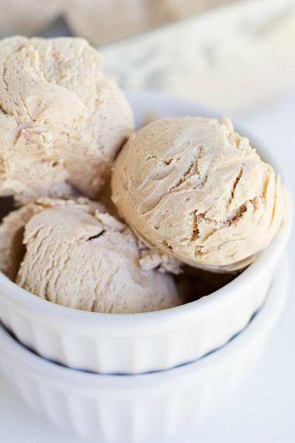

Ice Cream recipe

Description
A rich, sweet, creamy frozen food made from variously flavored
cream and milk products churned or stirred to a smooth consistency
during the freezing process and often containing gelatin, eggs,
fruits, nuts, etc. The definition of ice cream is a soft, frozen
treat made from milk fat.
YIELD: About 1 1/2 pints
TIME: 20 minutes plus several hours’ cooling, chilling and freezing
Ingredients
- 2 cups heavy cream
- 1 cup whole milk
- ⅔ cup sugar
- ⅛ teaspoon fine sea salt
- 6 large egg yolks
Steps
-
In a small pot, simmer heavy cream, milk, sugar and salt until
sugar completely dissolves, about 5 minutes. Remove pot from heat.
In a separate bowl, whisk yolks. Whisking constantly, slowly whisk
about a third of the hot cream into the yolks, then whisk the yolk
mixture back into the pot with the cream. Return pot to medium-low
heat and gently cook until mixture is thick enough to coat the back
of a spoon (about 170 degrees on an instant-read thermometer).
-
Strain through a fine-mesh sieve into a bowl. Cool mixture to room
temperature. Cover and chill at least 4 hours or overnight. Churn in
an ice cream machine according to manufacturers’ instructions.
Serve directly from the machine for soft serve, or store in freezer
until needed.